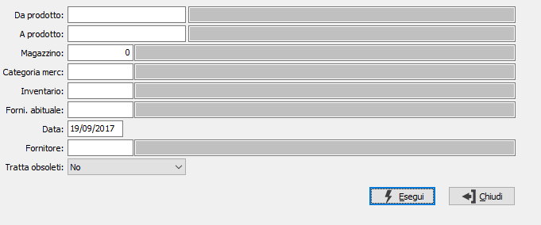

Invenduto su acquisti
Il programma produce prospetti di analisi degli articoli non venduti relativi a vari parametri di selezione forniti dall’utente.

DA PRODOTTO: eventuale codice dell'articolo, presente in anagrafica Prodotti, da cui si desidera iniziare la selezione dei movimenti di magazzino. Confermando a vuoto, la selezione inizia con il primo prodotto valido. Sul campo è attiva la ricerca (F9) sull’anagrafica prodotti.
A PRODOTTO: eventuale codice dell'articolo, presente in anagrafica Prodotti, a cui si desidera terminare la selezione dei movimenti di magazzino. Confermando a vuoto, la selezione termina con l’ultimo valido. Sul campo è attiva la ricerca (F9) sull’anagrafica prodotti.
MAGAZZINO: eventuale codice del magazzino per cui si vuole effettuare la selezione di analisi. Sul campo è attiva la ricerca (F9) sulla tabella Magazzini.
CATEGORIA MERCEOLOGICA: eventuale codice della categoria merceologica per cui si vuole effettuare la selezione di analisi. Sul campo è attiva la ricerca (F9) sulla tabella Categorie merceologiche.
CODICE INVENTARIO: eventuale codice inventario per cui si vuole effettuare la selezione di analisi. Sul campo è attiva la ricerca (F9) sulla tabella Codici inventario.
FORNITORE ABITUALE: eventuale codice del fornitore abituale dei prodotti con cui si desidera effettuare la selezione dei prodotti. Sul campo è attiva la ricerca (F9).
DATA: definisce la data da cui iniziare la selezione di analisi degli articoli invenduti.
FORNITORE: eventuale codice del fornitore per cui si vuole effettuare la selezione di analisi. Sul campo è attiva la ricerca (F9) sulla tabella Anagrafica fornitori.
TRATTA OBSOLETI: definisce come se includere nell'analisi anche gli articoli obsoleti: Si, No, Solo obsoleti.